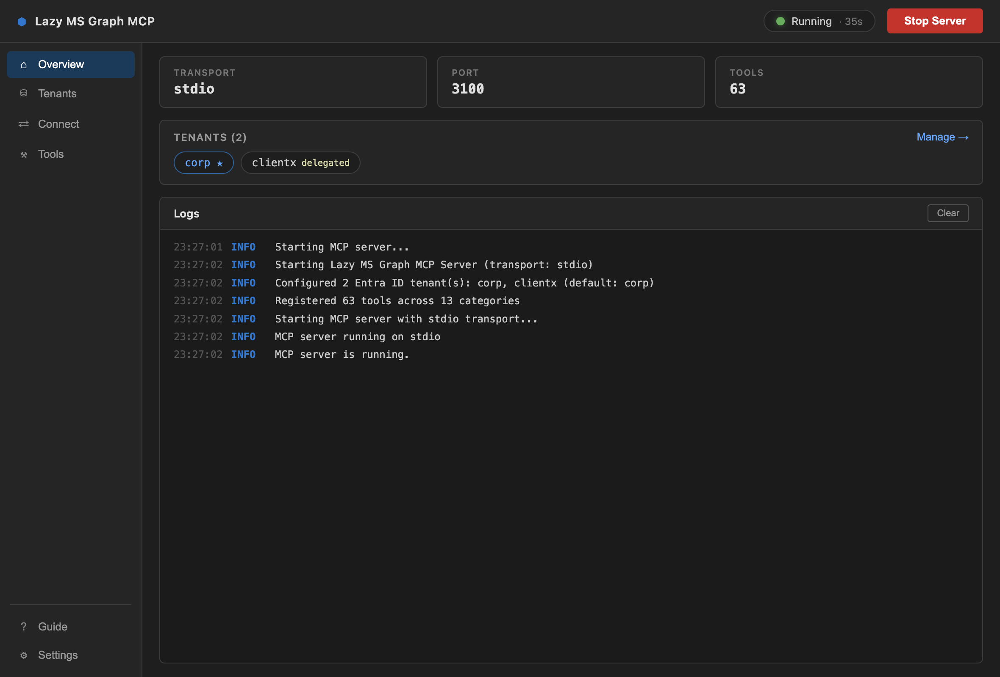
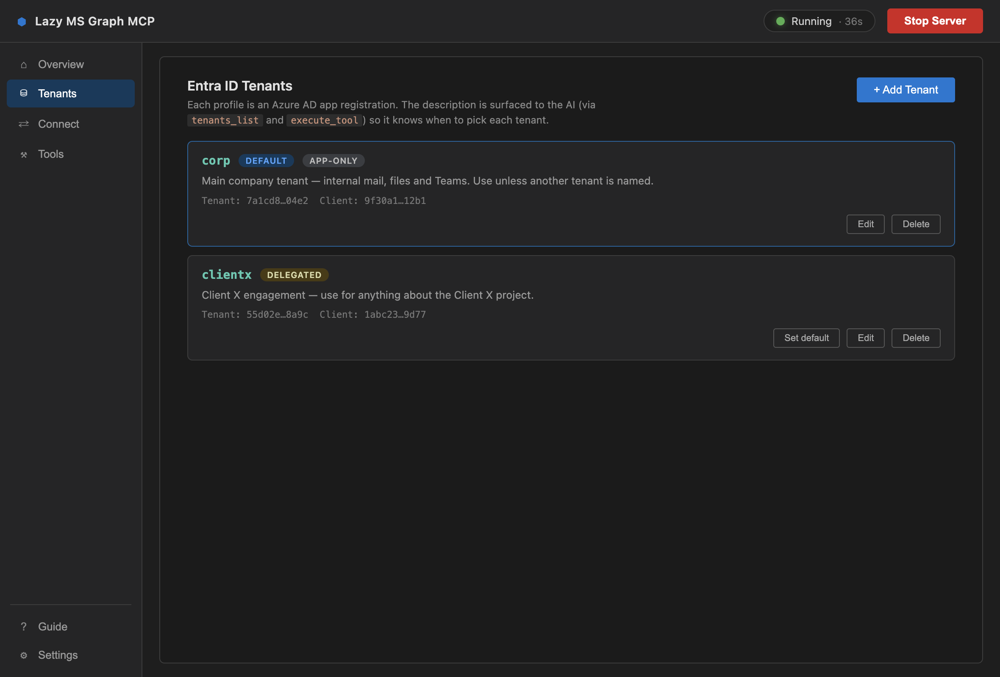

Talk to Microsoft 365
from Claude, Cursor & VS Code
Mail, calendar, files, Teams, users, SharePoint, Planner, OneNote — through one tiny MCP server. Download the macOS app, paste your Azure credentials, click Start. Your AI does the rest.

Up and running in three clicks
No config files to hand-edit, no build step, no terminal. The app validates your credentials, starts the server, and writes the MCP config for your editor.
Download & open the app
Grab the DMG, drag it to Applications. It lives in your menu bar, auto-starts with macOS if you want, and keeps running in the tray.
~30 secondsPaste your Azure credentials
Client ID, secret, tenant ID. The built-in Guide walks you through the Azure portal, tells you exactly which permission each tool needs, and validates the credentials before the server starts.
~2 minutes, onceClick “Install for Claude Code”
Or Cursor, or copy the VS Code snippet. The Connect page writes the MCP entry for you — including the full tenant roster if you have more than one. Then just ask your AI.
1 clickOne-click server
Start/Stop lives in the header with a status pill and uptime, visible from every page. Live, clearable logs on the Overview.
Multiple Entra ID tenants
Add several app registrations. Give each a description — “use for the Client X project” — and the AI picks the right tenant on its own.
Encrypted credentials
Secrets are stored with Electron safeStorage, backed by the macOS Keychain. They never sit in a plain-text file.
Auto-install for your editor
One button for Claude Code, one for Cursor, a copy-ready snippet for VS Code. Multi-tenant configs included.
Searchable tool catalog
The Tools page renders the real catalog from the bundled server. Search by name, category, or description.
Built-in Azure AD guide
Step-by-step app registration with a per-tool permission map, so you grant exactly what you need and nothing more.
A small app that stays out of your way
Sidebar layout: Overview, Tenants, Connect, Tools — plus Guide and Settings. Everything you need, nothing you don't.
Overview
Transport, port, and tool count at a glance. Tenant chips show which profile is the default and which use delegated auth. Logs stream live from the server process.
- Status pill with uptime, Start / Stop always in reach
- Tenant chips link straight to the Tenants page
- “Apply & Restart” banner when config changes while running
Tenants
Each profile is one Azure AD app registration. The description you write here is surfaced to the AI through tenants_list and baked into the execute_tool schema — so “check the Client X SharePoint” routes to the right tenant without you saying which.
- Add, edit, delete; set the default; two-step delete confirm
- App-only or delegated auth per tenant
- Secrets are masked — the AI never sees them

Things you can just ask
You type a sentence. Your assistant finds the right Graph tool, fills in the parameters, and runs it. A few examples and the tools they chain together.
Summarise every unread email from this week that mentions the budget.
Searches subject, body and metadata; pulls full bodies only for the hits.
Find a 30-minute slot with Priya and Tom on Thursday and book it.
Free/busy across several users, then a real invite with attendees.
Share the Q3 deck from my OneDrive with the #sales channel in Teams.
Finds the file, creates a sharing link, posts it to the channel.
Who's in the Finance group? Add Sam Lee and remove anyone who left.
Membership changes with the same tools your IT team would script.
Create an account for our new hire and add them to Engineering and All-Staff.
Requires User.ReadWrite.All — the app's guide tells you before you try.
Add a “Ship release notes” task to the Launch plan, due Friday, assigned to me.
Etag-aware updates so concurrent edits don't clobber each other.
Pull the action items from last week's retro page in OneNote.
Returns the page HTML; the AI extracts the list.
List the open items in the Client X “Deliverables” SharePoint list.
The tenant description says “use for anything about Client X” — the AI routes there automatically.
Two MCP tools. Fifty-six operations.
Most Graph MCP servers dump dozens of tools into your assistant's context. Lazy MS Graph exposes just search_tools and execute_tool, and lets the AI discover the rest by category.
You: Send an email to john@company.com about the meeting AI: → search_tools({ query: "*", category: "mail" }) ← mail_list_messages, mail_get_message, mail_send_message, mail_reply_message, mail_forward_message, mail_search_messages, mail_list_folders, mail_create_folder AI: → execute_tool({ tool_name: "mail_send_message", parameters: { userId: "me", subject: "About the meeting", body: "…", toRecipients: ["john@company.com"] } }) ← ✓ sent
tools in your MCP context — no matter how many other servers you have loaded. Your assistant stays sharp.
categories with category-first routing, so the AI narrows to the right family of tools before it picks one.
Run over stdio for editors, or as an HTTP server with /sse, /messages and /health endpoints.
Consultants, agencies, MSPs: one server, every client
Hold several Entra ID app registrations at once. Each carries a description — “when should the AI use this tenant?” — that is baked into the execute_tool schema at startup. The assistant routes on it without an extra lookup.
- · Pass
tenant: "fabrikam"on any call, or let the default apply - ·
tenants_list,tenants_get_current,tenants_switchfrom the assistant - · Configure in the app, via
MSGRAPH_TENANTSJSON, a file, or per-tenant env vars - · Legacy single-tenant vars still work as the
defaultprofile
[
{ "name": "contoso", "clientId": "…", "clientSecret": "…", "tenantId": "…",
"description": "Main company tenant — use unless another is named." },
{ "name": "fabrikam", "clientId": "…", "clientSecret": "…", "tenantId": "…",
"description": "Fabrikam engagement — anything about the Fabrikam project." }
]
56 tools across 11 categories
Everything the server registers, straight from the source. Each tool has typed, validated parameters and a description the AI uses to choose it.
Read, search, send, reply, forward; manage folders.
calendar
6 toolsEvents in a date range, CRUD, and free/busy across users.
files
6 toolsOneDrive: browse, search content, upload, download links, share.
users
5 toolsDirectory users with OData filtering, select, search, paging.
teams
5 toolsTeams, channels, and channel messages — read and post.
groups
5 toolsMicrosoft 365 & security groups and their membership.
contacts
5 toolsPersonal contacts for a user, full CRUD.
planner
5 toolsPlans for a group, tasks with etag-safe updates.
sharepoint
4 toolsSites, lists, and list items with expanded field values.
onenote
4 toolsNotebooks → sections → pages → page HTML.
tenants
3 toolsInspect and switch Entra ID profiles from the assistant.
The macOS app bundles a slightly larger build — 63 tools across 13 categories — adding a chats category (1:1 and group Teams chats) and an advanced category with a raw graph_request escape hatch for any Graph endpoint.
Run the server yourself
The app is the easy path, but the server is plain Node.js. Clone, build, point your editor at dist/index.js.
1 · Clone and build
git clone https://github.com/sagarmk/lazy-mcirosoft-mcp.git cd lazy-mcirosoft-mcp npm install npm run build
2 · Run it
MSGRAPH_CLIENT_ID="your-client-id" \ MSGRAPH_CLIENT_SECRET="your-client-secret" \ MSGRAPH_TENANT_ID="your-tenant-id" \ npm start
Optional: MSGRAPH_MCP_TRANSPORT=sse and MSGRAPH_MCP_PORT=3100 for HTTP mode. node dist/index.js --print-tools dumps the catalog as JSON with no credentials.
3 · Add to your editor
One command from any terminal:
claude mcp add lazy-ms-graph \ -e MSGRAPH_CLIENT_ID=your-client-id \ -e MSGRAPH_CLIENT_SECRET=your-client-secret \ -e MSGRAPH_TENANT_ID=your-tenant-id \ -- node /path/to/lazy-mcirosoft-mcp/packages/server/dist/index.js
~/Library/Application Support/Claude/claude_desktop_config.json
{
"mcpServers": {
"lazy-ms-graph": {
"command": "node",
"args": ["/path/to/lazy-mcirosoft-mcp/packages/server/dist/index.js"],
"env": {
"MSGRAPH_CLIENT_ID": "your-client-id",
"MSGRAPH_CLIENT_SECRET": "your-client-secret",
"MSGRAPH_TENANT_ID": "your-tenant-id"
}
}
}
}
~/.cursor/mcp.json
{
"mcpServers": {
"lazy-ms-graph": {
"command": "node",
"args": ["/path/to/lazy-mcirosoft-mcp/packages/server/dist/index.js"],
"env": {
"MSGRAPH_CLIENT_ID": "your-client-id",
"MSGRAPH_CLIENT_SECRET": "your-client-secret",
"MSGRAPH_TENANT_ID": "your-tenant-id"
}
}
}
}
.vscode/mcp.json (project) or your user settings JSON
{
"servers": {
"lazy-ms-graph": {
"type": "stdio",
"command": "node",
"args": ["/path/to/lazy-mcirosoft-mcp/packages/server/dist/index.js"],
"env": {
"MSGRAPH_CLIENT_ID": "your-client-id",
"MSGRAPH_CLIENT_SECRET": "your-client-secret",
"MSGRAPH_TENANT_ID": "your-tenant-id"
}
}
}
}
One app registration, five minutes
You do this once in the Azure portal. The app's built-in Guide shows the same steps with a per-tool permission map.
1 · Register an app
- portal.azure.com → App registrations → New registration
- Name it anything, e.g. “Lazy MS Graph MCP”
- Copy the Application (client) ID and Directory (tenant) ID
2 · Create a client secret
- Certificates & secrets → New client secret
- Copy the Value right away — it's shown once
3 · Grant Application permissions
- API permissions → Add a permission → Microsoft Graph → Application permissions
- Add what you need, then Grant admin consent